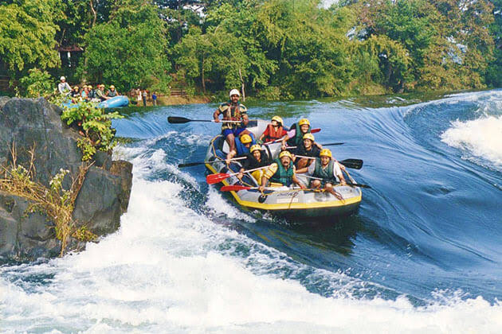
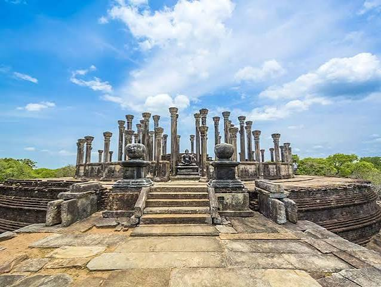
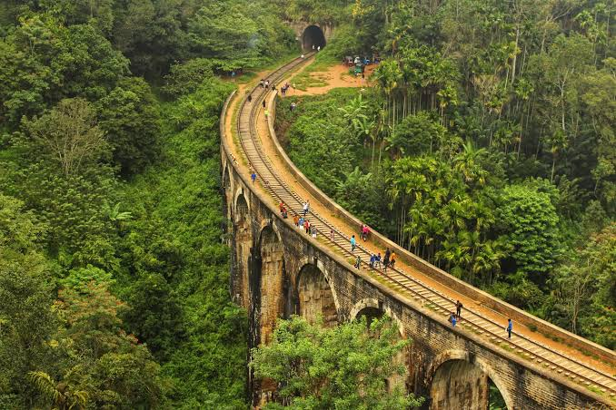
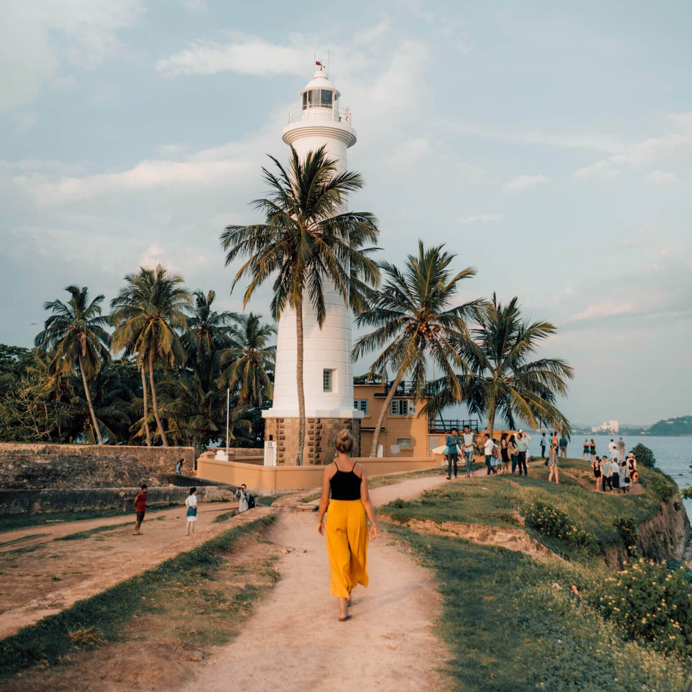

Kandy Elephant Ride
Discover the beautiful city of Kandy,famous for its cultural heritage, historical attractions and scenic surroundings.
- Visit the Temple of the Scared Tooth Relic.
- Explore beautiful Kandy Lake.
- Enjoy traditional Kandyan dance.

Kithulgala Water Rafting Adventure
Experience the excitement of white water rafting in Kithulgala, surrounded by beautiful rainforest scenery and the Kelani River.
- White water rafting
- Enjoy beautiful river views
- Experience an exciting outdoor adventure.

Anuradhapura Ancient Places
Discover the ancient city of Anuradhapura, famous for its historical monuments, scared Buddhist sites and ancient architecture.
- Visit the Ruwanwelisaya Stupa.
- Explore Sri Maha Bodhi.
- Explore ancient ruins and historical sites.

Ella Hiking
Visit Ella and enjoy beautiful mountain views, nature walks and exciting outdoor activities.
- Hiking and trekking
- Visiting Nine Arch Bridge
- Scenic train journeys
- Exploring waterfalls

Galle Doutch Fort
Explore the charming coastal city of Galle,famous for its historic Dutch Fort, beautiful beaches and colonial architecture.
- Explore the historic Galle Fort.
- Visit the famous Galle Ligthouse.
- Enjoy beautiful coastal sunsets.